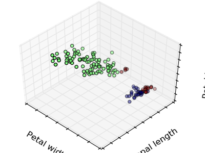
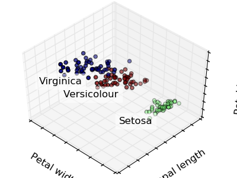
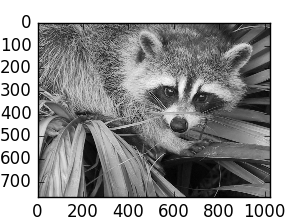
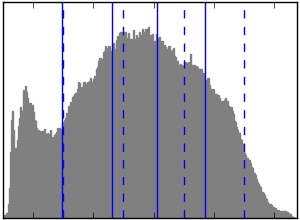
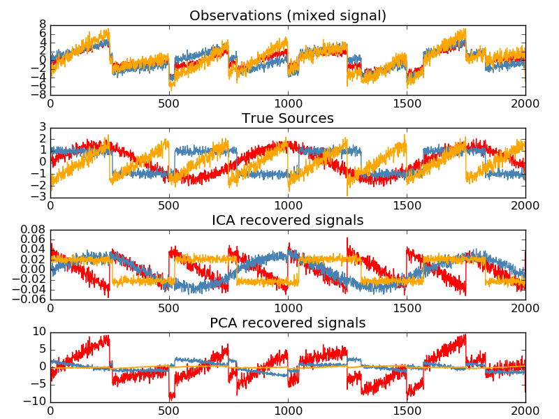

无监督学习：探索数据的呈现方式
聚类：将观测数据分组
聚类分析要解决的问题：
给定鸢尾花数据集, 如果我们事先就知道只有3种类型的鸢尾花,但还没有得到一个分割他们的标签集合 。我们将执行一个聚类任务(clustering task): 将观测数据集划分到间隔良好的组中就是聚类。
K-means 聚类¶
请注意，存在着许多不同的聚类标准和相关的算法，其中最简单的聚类算法就是 K-means算法。
>>> from sklearn import cluster, datasets
>>> iris = datasets.load_iris()
>>> X_iris = iris.data
>>> y_iris = iris.target
>>> k_means = cluster.KMeans(n_clusters=3)
>>> k_means.fit(X_iris)
KMeans(copy_x=True, init='k-means++', ...
>>> print(k_means.labels_[::10])
[1 1 1 1 1 0 0 0 0 0 2 2 2 2 2]
>>> print(y_iris[::10])
[0 0 0 0 0 1 1 1 1 1 2 2 2 2 2]
Warning
聚类算法不能绝对保证还原一个真实的类别集合。首先，选择合适的聚类数目是非常困难的。 尽管scikit-learn使用了很多技巧, 聚类算法对初始化状态比较敏感，会掉入局部最优值。
|  | ||
| Bad initialization | 8 clusters | Ground truth |
不要过度解读聚类结果！！
应用范例: 矢量量化(vector quantization)
聚类算法（尤其是KMeans）通常可被看作是一种选择少量样本来压缩信息的方法。 这一类问题又被叫做 矢量量化(vector quantization). 比如说, 它可以被用于分离图像色调( posterize an image):
>>> import scipy as sp
>>> try:
... face = sp.face(gray=True)
... except AttributeError:
... from scipy import misc
... face = misc.face(gray=True)
>>> X = face.reshape((-1, 1)) # We need an (n_sample, n_feature) array
>>> k_means = cluster.KMeans(n_clusters=5, n_init=1)
>>> k_means.fit(X)
KMeans(copy_x=True, init='k-means++', ...
>>> values = k_means.cluster_centers_.squeeze()
>>> labels = k_means.labels_
>>> face_compressed = np.choose(labels, values)
>>> face_compressed.shape = face.shape
|  |  |
 | |
| Raw image | K-means quantization | Equal bins | Image histogram |
分层合并聚类算法: Ward¶
层次聚类算法(Hierarchical clustering) 是一种聚类分析的类型，其目标是构建一个聚类层次结构(build a hierarchy of clusters)。 一般而言，这种分层次聚类思想的方法有两种：
- 合并法(Agglomerative) - 自底向上的方法: 先使得每个样本各成一类， 然后通过迭代合并不同的类以最小化耦合(linkage)准则。 当观测数据很少的时候，这一方法很有意思。当类别数很大时，它比K均值算法更有计算效率。
- 分裂法(Divisive) - 自顶向下的方法: 先将所有样本归入一类，然后不断迭代分裂增加聚类数目。 当类别数量很大时，这一方法不仅很慢而且还是统计病态的。
连接约束聚类法(Connectivity-constrained clustering)¶
当使用自底向上的凝聚聚类法的时候，我们可以通过一个连接图指定那些样本可以聚在一起。 在scikit-learn中，连接图用邻接矩阵表示，通常用稀疏矩阵存储。 连接约束的技术在某些时候很有用。比如，在分类图像的时候去检索连通域或连通组件。
import matplotlib.pyplot as plt
from sklearn.feature_extraction.image import grid_to_graph
from sklearn.cluster import AgglomerativeClustering
from sklearn.utils.testing import SkipTest
from sklearn.utils.fixes import sp_version
if sp_version < (0, 12):
raise SkipTest("Skipping because SciPy version earlier than 0.12.0 and "
"thus does not include the scipy.misc.face() image.")
###############################################################################
# Generate data
try:
face = sp.face(gray=True)
except AttributeError:
# Newer versions of scipy have face in misc
from scipy import misc
face = misc.face(gray=True)
# Resize it to 10% of the original size to speed up the processing
face = sp.misc.imresize(face, 0.10) / 255.
Feature 合并¶
我已经看到，稀疏性可以被用来减轻维数灾难，也就是与特征数量相比，观测数量相对不足。另一个办法是合并那些相似的特征分量 (feature agglomeration)。这一方法可以通过在特征方向上聚类来实现。
>>> digits = datasets.load_digits()
>>> images = digits.images
>>> X = np.reshape(images, (len(images), -1))
>>> connectivity = grid_to_graph(*images[0].shape)
>>> agglo = cluster.FeatureAgglomeration(connectivity=connectivity,
... n_clusters=32)
>>> agglo.fit(X)
FeatureAgglomeration(affinity='euclidean', compute_full_tree='auto',...
>>> X_reduced = agglo.transform(X)
>>> X_approx = agglo.inverse_transform(X_reduced)
>>> images_approx = np.reshape(X_approx, images.shape)
transform 和 inverse_transform 成员方法
有些 estimators 对象暴露了一个 transform 成员方法, 比如用于维数约简。
分解: 从信号到分量¶
分量与负荷
如果X是我们的多变量数据，那么我们想要解决的问题是在不同的观测基上重写X。 我们想去学习负荷L与X的分量们C，使其满足X = L C。 存在很多不同的准则去选择分量。
主成分分析: PCA¶
主成份分析 (PCA) 选择能够代表信号中的最大方差的那些相继分量。
上图中的观测所跨越的点云在一个方向上是非常平坦的，这说明三个单变量特征中的一个 几乎可以用另外两个特征分量计算出来。PCA寻找的是数据中不平坦的那些方向（也就是方差很大的方向）。
当用PCA来变换数据的时候，它可以缩减数据的维数并将原始数据投影到一个主要的子空间。
>>> # Create a signal with only 2 useful dimensions
>>> x1 = np.random.normal(size=100)
>>> x2 = np.random.normal(size=100)
>>> x3 = x1 + x2
>>> X = np.c_[x1, x2, x3]
>>> from sklearn import decomposition
>>> pca = decomposition.PCA()
>>> pca.fit(X)
PCA(copy=True, n_components=None, whiten=False)
>>> print(pca.explained_variance_)
[ 2.18565811e+00 1.19346747e+00 8.43026679e-32]
>>> # As we can see, only the 2 first components are useful
>>> pca.n_components = 2
>>> X_reduced = pca.fit_transform(X)
>>> X_reduced.shape
(100, 2)
独立分量分析: ICA¶
独立分量分析 (ICA) 选择那些能够使得loadings的分布携带最大量独立信息的分量。 他能够回复非高斯non-Gaussian的独立信号。
>>> # Generate sample data
>>> time = np.linspace(0, 10, 2000)
>>> s1 = np.sin(2 * time) # Signal 1 : sinusoidal signal
>>> s2 = np.sign(np.sin(3 * time)) # Signal 2 : square signal
>>> S = np.c_[s1, s2]
>>> S += 0.2 * np.random.normal(size=S.shape) # Add noise
>>> S /= S.std(axis=0) # Standardize data
>>> # Mix data
>>> A = np.array([[1, 1], [0.5, 2]]) # Mixing matrix
>>> X = np.dot(S, A.T) # Generate observations
>>> # Compute ICA
>>> ica = decomposition.FastICA()
>>> S_ = ica.fit_transform(X) # Get the estimated sources
>>> A_ = ica.mixing_.T
>>> np.allclose(X, np.dot(S_, A_) + ica.mean_)
True